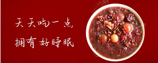
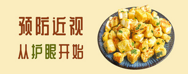

| 舌尖上的美食首页 | 菜谱 | 食材 | 珍选 | 家乡菜 | 活动 | 名菜 | 注册 | 登录 | QQ登录 | 签到有礼 | 留言板 |
| 舌尖上的美食 | 首页 | 菜谱 | 食材 | 珍选 | 家乡菜 | 名菜 | 搜索 |
|
|||||
| 喜欢吃鱼的开过来！ | 换个花样吃饭糯米！ | 大雪饮食，进补要得当！ |
| 小美的菜单 我国的海鱼和淡水鱼约有两千多种，鱼的烹调方法也很多。各种鲜嫩肥美的鱼类做法都在这啦，快来领走吧！ |
心情bu美丽 粘糯饱满的糯米怎么吃才能不落俗套，糯米可以变幻出怎样的美味新花样？换个花样吃糯 |
小美的菜单 大雪节气到来，在寒冷的大雪节气更要多吃蔬菜来补充营养、防止上火。那么，到底大雪节气吃什么呢? |
| 健康 食疗 健康首页 | 烘焙 食谱 烘焙专区 | 为您推荐 我的收藏 |
|  |  | |
| ⊙ 降血压食物推荐，从日常开始改善！ | ⊙ 不输猪油版的桃酥做法 | ⊙ 合理饮食，远离脂肪肝 |
| ⊙ 日常按摩这些部位，养生更养身 | ⊙ 这些挑水果小窍门，你知道吗？ | ⊙划重点！食物降血脂这些更有效 |
| ⊙ 脑溢血原因，快点看过来 | ⊙ 内藏惊喜的彩虹威风蛋糕 | ⊙粗粮细作：健康能量燕麦甜品 |
| ⊙ 孩子体质差总生病 | ⊙ 消耗蛋挞皮—简单版紫薯酥 | ⊙妈妈派┊童趣童味，儿童创意餐点 |
| ⊙ 专题}快手早餐，营养成分う三明治 | ⊙ 菜单：奶糖竟然有这种作用 | ⊙ |
| ⊙ 专题}你不知道的那些食物神级吃法 | ⊙ 专题：另类鲜香口儿 满足你的味蕾！ | ⊙ |
| 版权所有 © jl保留所有权利 |